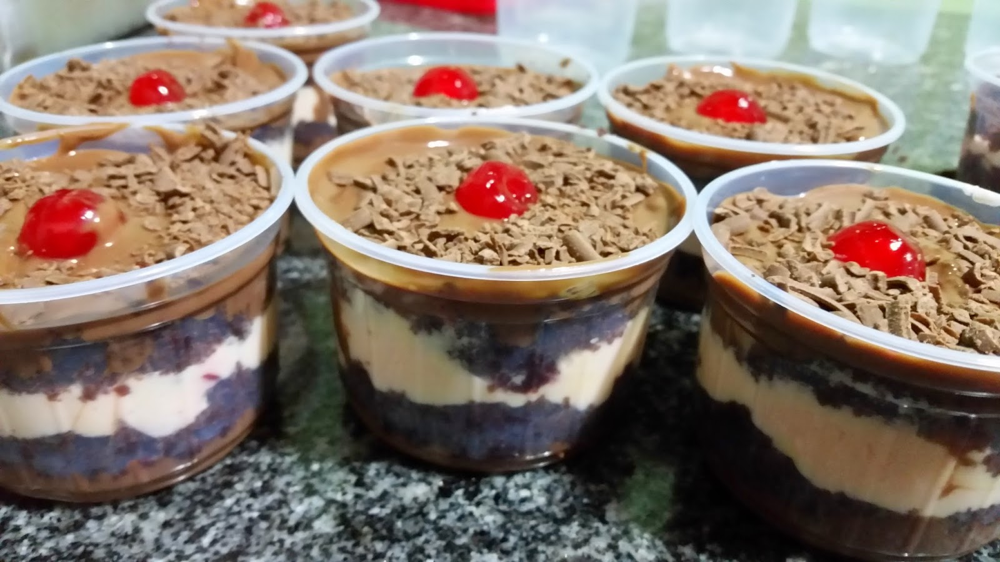

|  |
|
|
| ◄ | ► |
| A ideia em fazer Bolos em Potes, especificamente começou no Brasil, com um casal de São Paulo que testou uma receita de bolo para vender. Hoje é um sucesso, no qual aqui você encontra os melhores deles para experimentar e repetir! |